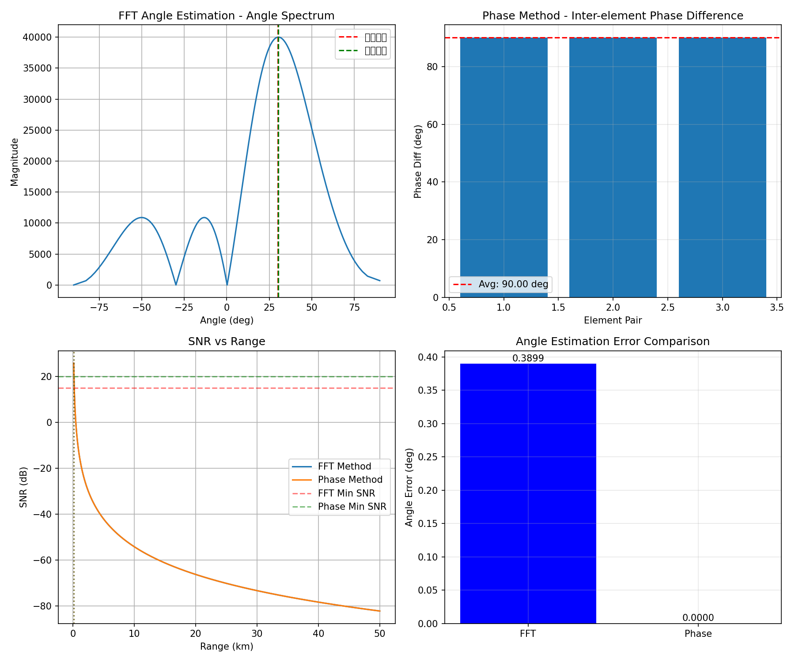
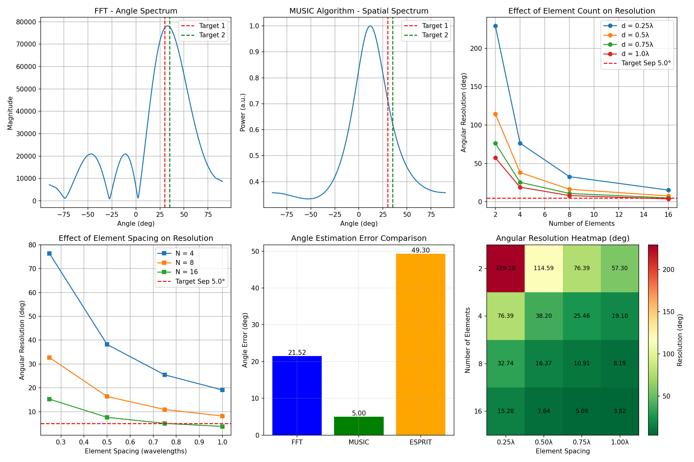

任务 3-1: 单目标测角
- 仿真 1 发 4 收阵列 (d = λ/2)
- 产生回波信号
- FFT 测角法仿真
- 相位法测角仿真
- 分析对比作用距离
任务 3-2: 双目标测角
- 仿真 2 个点目标的角度
- 分析参数对分辨力的影响
- 阵元个数影响分析
- 阵元间距影响分析
- 提高分辨率方法研究
汇报人：雷达项目组
日期：2026 年 4 月
| 参数 | 符号 | 数值 | 单位 |
|---|---|---|---|
| 载波频率 | f₀ | 10 | GHz |
| 带宽 | BW | 100 | MHz |
| 波长 | λ | 30 | mm |
| 阵元数量 | N | 4 | - |
| 阵元间距 | d | λ/2 | - |
| 目标距离 | R | 10 | km |
| 目标角度 | θ | 30 | deg |

| 方法 | 估计角度 | 误差 |
|---|---|---|
| FFT 测角 | 30.39° | 0.39° |
| 相位法 | 30.00° | 0.00° |

| 阵元数 | d=0.25λ | d=0.50λ | d=0.75λ | d=1.00λ |
|---|---|---|---|---|
| 4 | 76.39° | 38.20° | 25.46° | 19.10° |
| 8 | 32.74° | 16.37° | 10.91° | 8.19° |
| 16 | 15.28° | 7.64° | 5.09° | 3.82° ✓ |
⚠️ 4 阵元阵列无法分辨 5°间隔的双目标，需要至少 16 阵元
Radar/
├── src/radar/
│ ├── p3-1.py # 单目标测角
│ ├── p3-2.py # 双目标测角
│ └── __init__.py
├── tests/
│ └── test_radar.py # 单元测试
├── docs/
│ ├── p3-1-results.png
│ └── p3-2-results.png
├── 挑战任务 3.md # 详细报告
└── presentation.html # 本演示文稿generate_echo_signal()fft_angle_estimation()phase_angle_estimation()music_angle_estimation()esprit_angle_estimation()详细报告请参阅：挑战任务 3.md
仿真代码：src/radar/p3-1.py、src/radar/p3-2.py